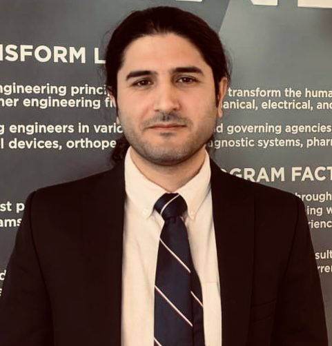
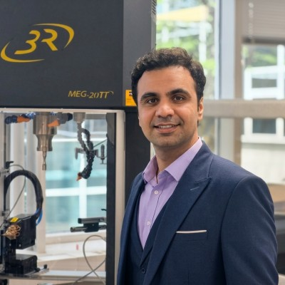
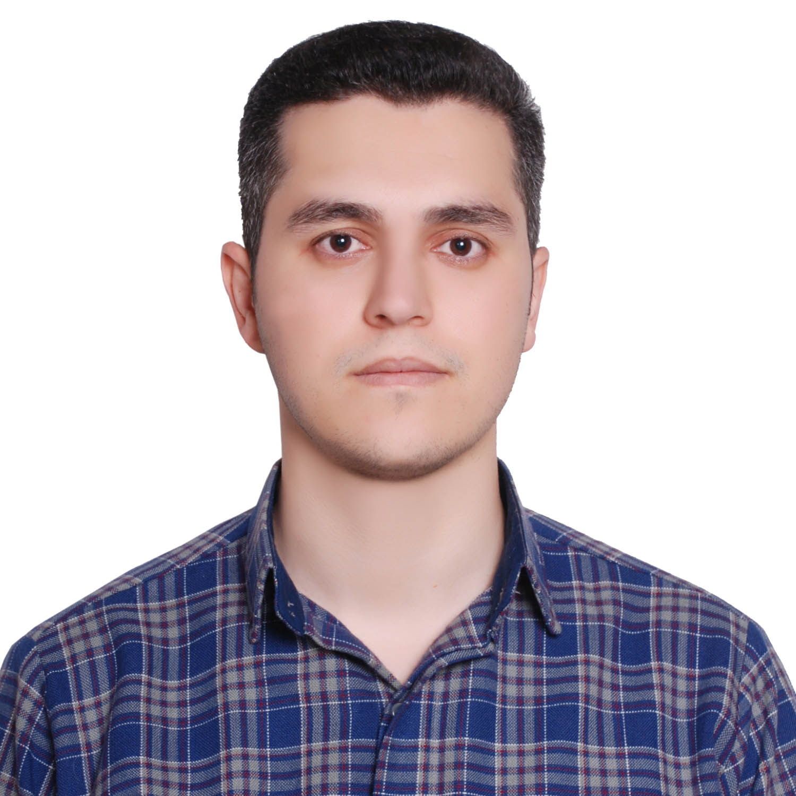
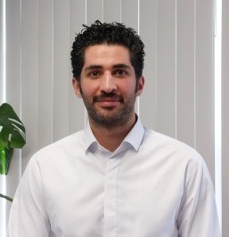
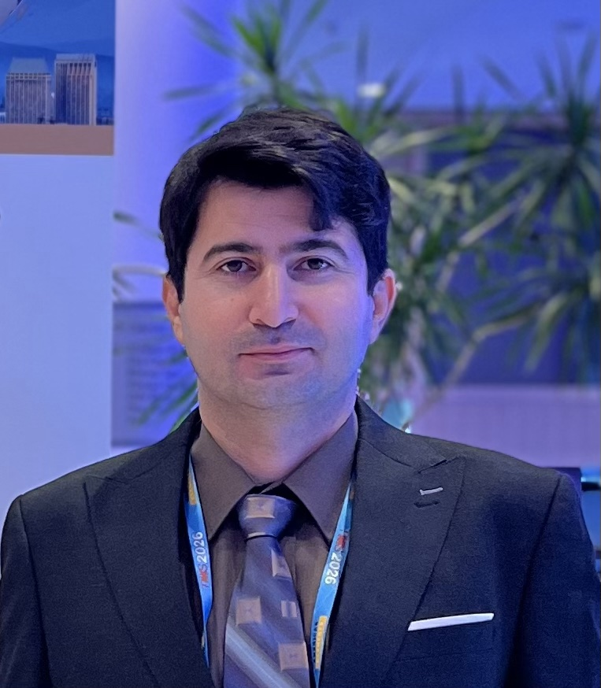
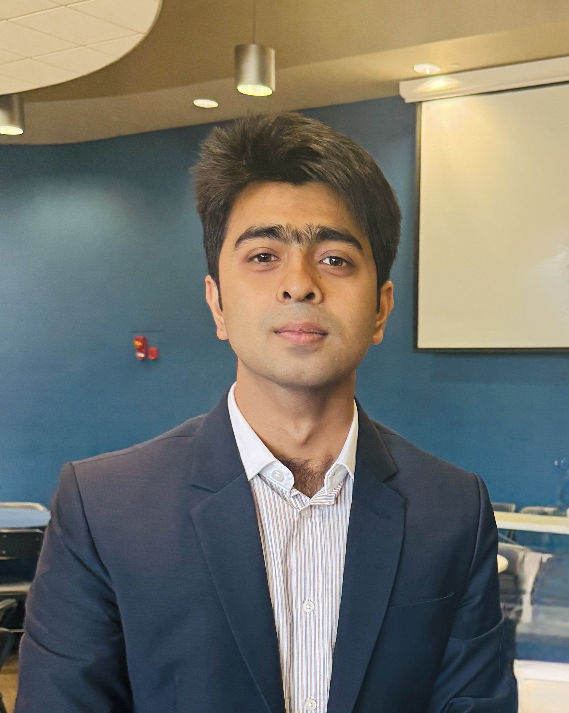
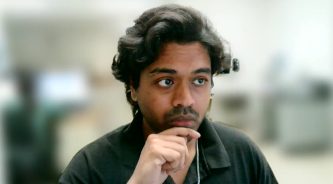
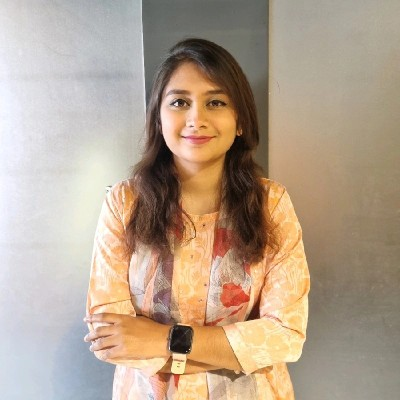

Principal Investigator

Dr. Meysam Haghshenas
Associate Professor, MIME Department
Dr. Meysam Haghshenas is a faculty member in Mechanical Engineering at the University of Toledo. Prior to joining the University of Toledo in June 2019, he served as an Assistant Professor in the Department of Mechanical Engineering at the University of North Dakota. His previous experience also includes postdoctoral research at the University of Waterloo in Canada and professional experience as a Process Engineer with Linamar Corporation, a global manufacturing company. Dr. Haghshenas’s research focuses on the mechanical behavior and processing of engineering materials, with particular emphasis on fatigue and fracture mechanics, additive manufacturing, advanced materials characterization, and processing–structure–property relationships.
Research ProfileGraduate Research Assistants

MohammadBagher Mahtabi
Ph.D. Candidate
My research focuses on developing a comprehensive understanding of the intricate relationships among the processing, structure, and properties of Nickel–Aluminum Bronze (NAB) alloys, particularly those fabricated using the Wire Arc Additive Manufacturing (WAAM) process. My current research primarily investigates the very-high-cycle fatigue (VHCF) behavior of WAAM NAB under different environmental conditions, including ambient air, ex situ corrosion, and in situ corrosion. The insights gained from my research will contribute to the design and application of NAB components for ultra-long-life service conditions. In addition, I am investigating fatigue-life prediction of NAB alloy using different approaches, including machine learning methods and fatigue crack growth analysis. These efforts aim to develop reliable predictive frameworks for assessing the fatigue performance and service life of additively manufactured NAB components.s
Research Profile
Amir Shakibi
Ph.D. Student
Prior to joining F3L, I earned an M.S. in Industrial Engineering, followed by a second M.S. in Materials Science and Engineering from Cal State LA, where my research focused on microstructure control during Laser Wire Directed Energy Deposition and understanding process–microstructure–property relationships in additively manufactured metallic materials. Currently, my research focuses on the very high cycle fatigue behavior of advanced materials, including GRCop-42 and ORC-21 alloys, which are of growing importance for demanding aerospace applications. My current NASA-sponsored research investigates the fatigue performance and failure mechanisms of these materials in the very high cycle and gigacycle regimes, with particular emphasis on their behavior under extreme service conditions, including elevated temperatures. Through this work, I aim to contribute to a better understanding of the long-term durability and reliability of advanced materials for next-generation aerospace systems.
Research Profile
Mojtaba Roshan
Ph.D. Candidate
Mojtaba is pursuing a Ph.D. in Mechanical Engineering at the University of Toledo. His current research focuses on the fatigue behavior and reliability of additively manufactured metallic materials, particularly laser powder bed fusion (LPBF) CuNi30 alloys. His work primarily investigates the high-cycle and very-high-cycle fatigue (VHCF) behavior of CuNi30 under different environmental conditions, including ambient air, ex situ corrosion, and in situ corrosion. He combines fatigue experiments, microstructural characterization, and Crystal Plasticity Finite Element Method (CPFEM) simulations to understand fatigue mechanisms.
Research Profile
Amim Mianjy Poorabdol
Ph.D. Student
Amin poorabdol Mianjy: I started my PhD in Spring 2026 and am currently researching very high cycle fatigue (VHCF) of additively manufactured Ti-6Al-4V and Inconel 718. My research focuses on materials produced using laser powder bed fusion (LPBF) and other additive manufacturing processes, with an emphasis on understanding fatigue-life-related properties and the effects of manufacturing and printing parameters on fatigue performance.
Research Profile
Nasrollahpourshirvani Mostafa
Ph.D. Student
My research interests are broadly focused on mechanical behavior, fatigue, fracture, and failure of engineering materials. I am particularly interested in understanding how material structure, manufacturing processes, defects, and microstructural features influence mechanical performance and durability. My current research involves additively manufactured metals and aluminum-based composite materials, with an emphasis on their fatigue and fracture behavior. I am also interested in materials characterization, experimental mechanics, fatigue testing, fracture mechanics, and computational modeling. Through my research, I aim to better understand the mechanisms that control material failure and contribute to the development of more reliable and durable engineering materials.
Research Profile
Antu Md Naimur Rahman
Ph.D. Student
My research focuses on advancing the very-high-cycle fatigue (VHCF) performance of next-generation additively manufactured lightweight, high-strength aluminum alloys, particularly alloys from the 2xxx, 6xxx, and 7xxx series. Using accelerated ultrasonic fatigue testing under both ambient and elevated-temperature conditions, I investigate how post-processing, microstructural features, and manufacturing-induced defects govern fatigue strength, crack initiation, and fracture mechanisms across ultra-long service lives. The broader goal is to establish fundamental processing, microstructure, defect, and fatigue relationships that can enable more reliable design of lightweight structural materials for demanding high-performance applications. In parallel, I work on co-extruded engineering polymer and fiber-reinforced polymer systems for structural prototyping, focusing on core-shell architectures, mechanical performance, and fatigue behavior. Together, these efforts advance the understanding of fatigue damage and failure mechanisms in additively manufactured metals and polymers for durable, long-life engineering applications
Research Profile
Siddiqui Ayaz Ahmed
M.S. Student
Prior to starting my master’s degree, I was an undergraduate student at the University of Toledo, where I was given the opportunity to continue my education and research with Dr. Meysam and the Failure, Fracture, and Fatigue Laboratory (F3L). My research focuses on the very-high-cycle fatigue (VHCF) behavior of additively manufactured GRX-810, an oxide-dispersion-strengthened nickel-based superalloy designed for high-temperature applications. Using ultrasonic fatigue testing, I investigate how processing conditions, microstructure, temperature and defects influence crack initiation, fatigue life, and failure. The goal of my research is to establish fatigue-life prediction and support the qualification of GRX-810 components for aerospace, propulsion, and other demanding applications.
Research Profile
Tasnia Pasha
M.S. Student
My research focuses on understanding the relationships among additive manufacturing, heat treatment, microstructure, and fatigue performance of high-strength aluminum alloys, particularly A205 fabricated by Powder Bed Fusion-Laser Beam (PBF-LB). My current work primarily investigates the very high cycle fatigue (VHCF) behavior of A205 under different conditions, including Hot Isostatic Pressing (HIP) and HIP followed by T7 heat treatment. Special emphasis is placed on fatigue strength, crack initiation mechanisms, internal defects, and fracture morphology under extended-life cyclic loading conditions In addition, I am investigating the high-temperature VHCF behavior of A205 to understand how elevated temperature influences its fatigue response and failure mechanisms. These efforts aim to establish reliable structure-property-fatigue relationships and improve the understanding of additively manufactured A205 for lightweight, fatigue-critical aerospace applications and long-term service conditions.
Research Profile